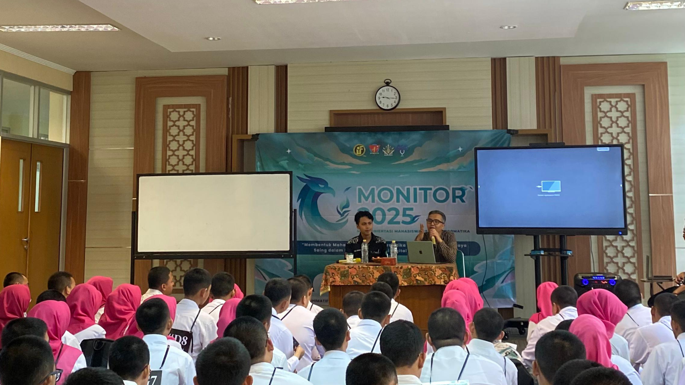
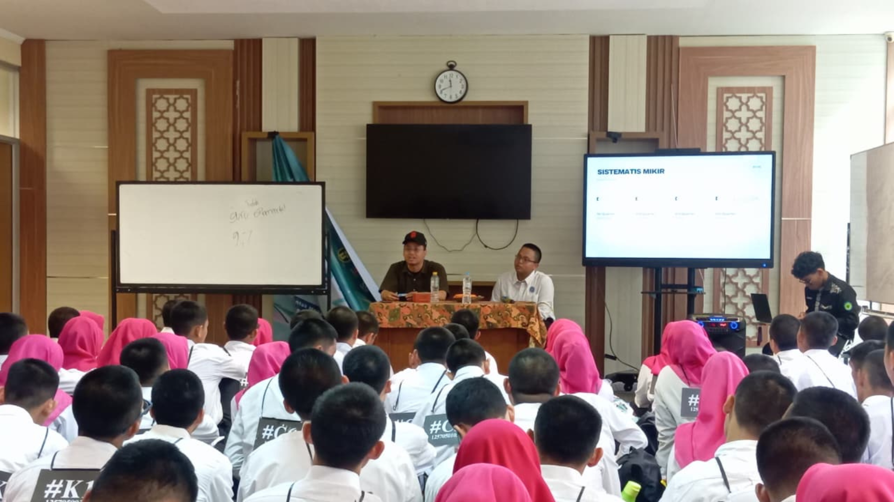
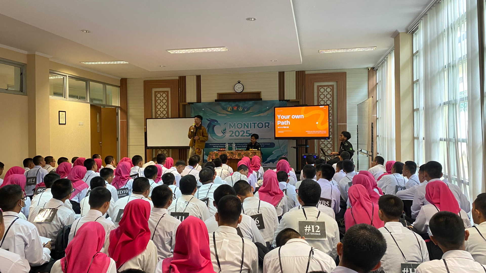

Sabtu, 20 September 2025
#02
Wahyu Memandu Ilmu
Pengantar Logika
KeInformatikaan
Apa itu
Dr. Cepy Slamet M.Kom
Wahyu Memandu Ilmu merupakan paradigma khas UIN Sunan Gunung Djati Bandung yang menegaskan bahwa ilmu pengetahuan harus berpijak pada nilai-nilai wahyu (Al-Qur’an dan Hadis) sebagai sumber utama kebenaran. Konsep ini berangkat dari kesadaran bahwa wahyu dan akal bukanlah dua hal yang saling bertentangan, melainkan saling melengkapi. Dengan demikian, ilmu pengetahuan modern tidak hanya diarahkan untuk kemajuan teknologi dan peradaban, tetapi juga tetap berlandaskan etika, moral, serta tujuan luhur sesuai tuntunan wahyu.
Paradigma Wahyu Memandu Ilmu di UIN Sunan Gunung Djati Bandung
menegaskan bahwa ilmu pengetahuan dan teknologi harus berlandaskan
nilai wahyu, salah satunya adalah prinsip larangan mubazir. Allah Swt.
berfirman dalam Al-Qur’an:
“...dan janganlah kamu
menghambur-hamburkan (hartamu) secara boros. Sesungguhnya orang-orang
yang boros itu adalah saudara-saudara setan.” (QS. Al-Isrā’ [17]:
26–27)
Dalam konteks Teknik Informatika, prinsip ini sangat relevan karena teknologi pada dasarnya hadir untuk mengefisiensikan pekerjaan dan sumber daya, bukan memboroskan. Contohnya, pemanfaatan algoritma yang optimal untuk menghemat waktu komputasi, penggunaan sistem informasi untuk mengurangi biaya operasional dan kertas (paperless), serta pengembangan aplikasi yang memudahkan masyarakat agar lebih hemat tenaga, waktu, dan biaya. Dengan begitu, sains dan teknologi tidak hanya mengejar kemajuan teknis, tetapi juga sejalan dengan pesan wahyu agar manusia tidak jatuh pada perbuatan mubazir.
Roda kesuksesan Paradigma sks:
Diaz Azkia S.T

Apa itu Logika
Logika adalah ilmu tentang kaidah berpikir yang benar, teratur, dan
konsisten. Dengan logika, seseorang dapat membedakan argumen yang
sahih dan yang keliru.
Sistematis Berpikir
Berpikir sistematis berarti menyusun premis secara runtut, dari dasar
ke kesimpulan, dengan aturan yang jelas. Cara berpikir ini membantu
menjaga konsistensi, meminimalkan kesalahan, serta menghasilkan
argumen yang lebih kuat dan meyakinkan.
Sistematis Berpikir
Berpikir sistematis berarti menyusun premis secara runtut, dari dasar
ke kesimpulan, dengan aturan yang jelas. Cara berpikir ini membantu
menjaga konsistensi, meminimalkan kesalahan, serta menghasilkan
argumen yang lebih kuat dan meyakinkan.
Kesalaha Dalam Berfikir:
Logika dalam informatika bukanlah sesuatu yang mutlak benar atau salah dengan sendirinya, melainkan seperangkat aturan untuk menata cara berpikir agar lebih runtut dan terarah. Yang membenarkan atau menyalahkan sebuah alur logika sesungguhnya adalah diri kita sendiri, sesuai dengan bagaimana kita menyusun premis, mengambil keputusan, dan menguji hasilnya. Dengan kesadaran ini, logika menjadi alat yang fleksibel untuk membantu memecahkan masalah, bukan batasan kaku yang membelenggu pemikiran.
Apa itu
Fatih Maulana
Ilmu informatika merupakan disiplin yang mempelajari bagaimana data, informasi, dan pengetahuan dapat diolah melalui perangkat komputasi untuk membantu kehidupan manusia. Bidang ini tidak hanya mencakup pemrograman dan rekayasa perangkat lunak, tetapi juga mencakup sistem informasi, jaringan komputer, kecerdasan buatan, hingga keamanan data. Dengan perkembangan teknologi yang begitu pesat, informatika hadir sebagai sarana untuk mengefisiensikan pekerjaan, meminimalkan pemborosan sumber daya, dan menghadirkan solusi inovatif yang relevan dengan kebutuhan masyarakat modern.
Bidang informatika memiliki berbagai macam salah satunya:
Sebagai mahasiswa, menentukan tujuan hidup dan arah karier sejak dini sangatlah penting karena hal itu menjadi kompas dalam mengambil keputusan, baik di bidang akademik maupun kehidupan sehari-hari. Tanpa tujuan yang jelas, perjalanan kuliah bisa terasa kosong dan membingungkan, sementara dengan tujuan yang tepat, setiap langkah akan lebih terarah.
Salah satu konsep yang bisa membantu menemukan tujuan hidup adalah ikigai,Ikigai adalah konsep dari Jepang yang berarti "alasan untuk hidup", yaitu titik keseimbangan antara apa yang kita cintai, apa yang kita kuasai, apa yang dibutuhkan dunia, dan apa yang bisa memberi penghasilan. Ketika keempat hal ini bertemu, seseorang akan menemukan tujuan hidup yang penuh makna.
Secara sederhana, ikigai bisa dipahami melalui 4 lingkaran utama:
Gabungan dari empat elemen inilah yang menciptakan ikigai, yaitu titik ideal yang membuat hidup terasa bermanfaat, produktif, dan bahagia.
Salah satu cara lainnya menggunakan S.M.A.R.T,S.M.A.R.T adalah metode dalam menetapkan tujuan agar lebih jelas, terukur, dan realistis. Setiap hurufnya memiliki makna:
Dengan prinsip SMART, mahasiswa bisa mengubah tujuan besar menjadi langkah-langkah nyata yang terarah dan lebih mudah diwujudkan.